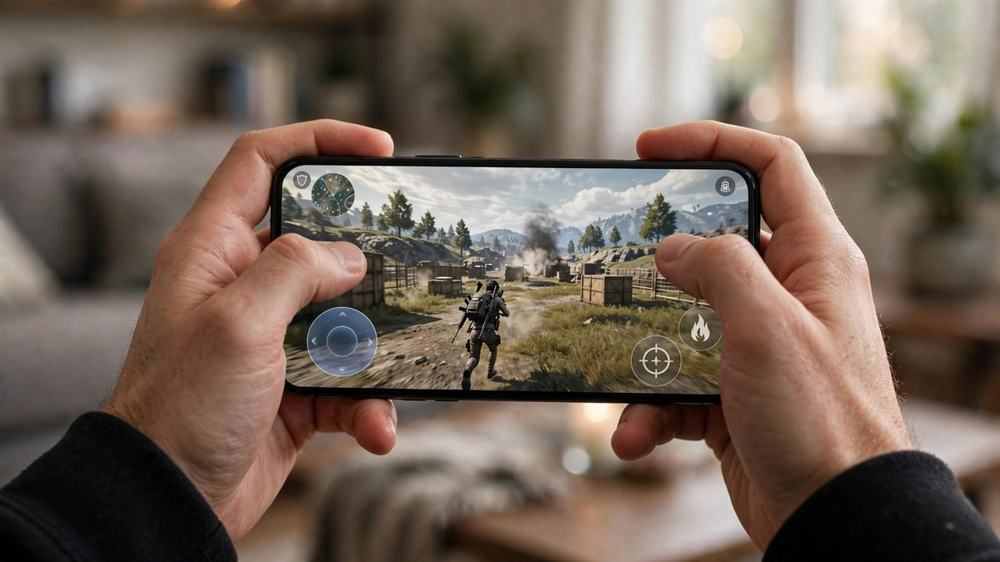

Best PUBG Settings for Mobile: Smooth Aim and High FPS

PUBG Mobile plays very differently from the PC version, and your settings matter even more on a phone. A small screen, touch controls and a mobile processor mean that the wrong graphics or sensitivity settings can cost you fights you should have won. The right setup gives you smooth frame rates, a clear view of enemies, and controls that respond the way your fingers expect. This guide covers the best PUBG Mobile settings for graphics, sensitivity, controls and audio, with exact values for both mid-range and high-end phones.
Graphics Settings for Smooth Performance
Frame rate matters more than visual quality on mobile. Open Settings, go to Graphics, and set your frame rate to the highest your phone supports: 90 FPS or 120 FPS if available, otherwise 60 FPS. Never play on 30 FPS if you can avoid it, because the game feels sluggish and your aim suffers. Set graphics quality to Smooth or Balanced. Smooth gives you the best frame rate and the clearest view of enemies, while Balanced looks slightly better at a small performance cost. Turn off anti-aliasing, set shadows to Off, and disable auto-adjust graphics so the game does not lower your frame rate during fights. If your phone heats up during long sessions, use the Smooth graphics preset with 60 FPS and take a short break between matches. A cooler phone holds its frame rate far better than a hot one.
Recommended graphics settings
- Graphics: Smooth (or Balanced on powerful phones)
- Frame rate: Extreme (90 FPS) or Ultra (120 FPS) if supported
- Style: Colourful for better enemy visibility
- Anti-aliasing: Off
- Shadows: Off
- Auto-adjust graphics: Off
Sensitivity Settings That Actually Work
Sensitivity is the most personal setting in the game, but these starting values work well for most players using two thumbs. Set camera sensitivity to 95 to 120 percent for third person, and 100 to 120 percent for first person. For ADS sensitivity, use 60 to 70 percent for red dot and holographic sights, 50 to 60 percent for 2x scopes, 35 to 45 percent for 3x scopes, and 25 to 35 percent for 4x scopes. For 6x and 8x scopes, use 15 to 25 percent. Gyroscope players should start with 200 to 250 percent for third person and 180 to 220 percent for ADS, then adjust in steps of 10. Do not copy a professional player's sensitivity exactly: their settings are tuned to their phone size and grip. Instead, use these values as a starting point, play five matches, and adjust one slider at a time until your aim feels natural.
Controls and Layout
Your control layout decides how fast you can shoot, aim and move at the same time. The default two-thumb layout works for beginners, but a three-finger or four-finger claw layout gives you a real advantage because you can aim and fire simultaneously. In a four-finger claw, your left index finger controls fire, your right index finger controls aim and scope, and your thumbs handle movement and jumping. It feels strange for the first week, but most competitive players use it for a reason. Whatever layout you choose, make the fire button large and place it where your finger rests naturally. Turn on the separate scope button, enable peek and open scope, and set your sprint to auto-run so you can move without holding the joystick. Save your layout to the cloud so you never lose it if you reinstall the game.
Audio and Gameplay Settings
Sound is just as important on mobile as on PC. Use wired earphones or low-latency Bluetooth earbuds, because phone speakers make it hard to tell where footsteps come from. Set your music volume to low or off, keep sound effects at high, and turn on the microphone only when you play with a squad. In gameplay settings, enable the damage indicator, turn on the healing prompt, and set your aim assist to On if you are a beginner. Experienced players sometimes turn aim assist off for more control, but it helps most players land shots. Set your graphics style to Colourful, which makes enemies stand out against grass and buildings. Finally, close background apps before you play, enable your phone's game mode if it has one, and keep your battery above 20 percent, because many phones throttle performance when the battery is low.
Frequently Asked Questions
What is the best graphics setting for PUBG Mobile?
Smooth graphics with the highest frame rate your phone supports is the best competitive setup. It gives you the smoothest aim and the clearest view of enemies, even if the game looks less detailed.
Should I use gyroscope in PUBG Mobile?
Gyroscope helps with fine aiming and recoil control, and most competitive players use it. If you are new, start with gyroscope on scope only, then move to always on once you are comfortable.
Is the claw layout worth learning?
Yes. A three-finger or four-finger claw lets you move, aim and fire at the same time, which the default layout cannot do. It takes about a week to feel natural, but it improves your close-range fights noticeably.
Download PUBG: Battlegrounds
Play free on PC or mobile — download the official game from the links below.